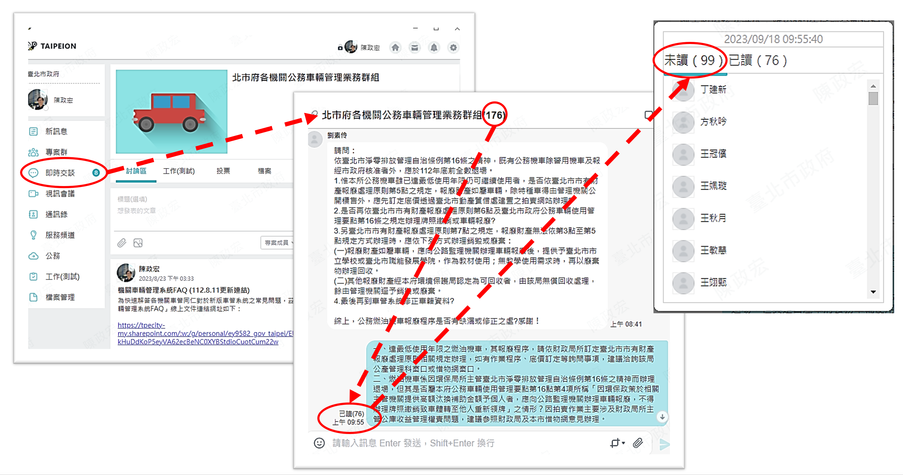
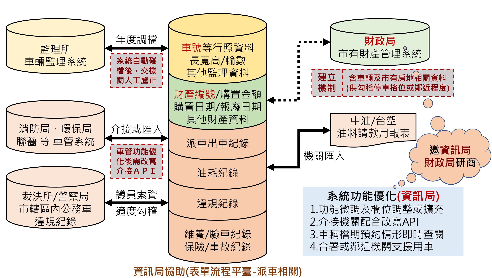

委外車定義
- 1111207秘書長備忘錄-釐清各機關名下車輛尚未納管為公務車輛事宜
- 1111223府授秘總字1113012464-函釋委外車定義
- 1131118北市秘總1133011459-再次函釋委外車定義
1121004府授秘總1123009794號函：本府公務車輛管理常態查核及處理措施
- 112年起（以下同）各類公務車輛除委外車外，機關均應至「TaipeiON公務雲—表單流程平臺—車輛管理」系統（下稱車管系統）確實完成車輛資料作業建置（含車籍資料、里程、維養、驗車、違規及交通事故紀錄）；若有異動，並應於次月10日前更新車管系統及月統計表資料。
- 本府重要車管訊息通知，已統一運用「TaipeiON即時通—專案群—北市府各機關公務車輛管理業務群組」（下稱車管群組）傳送，各機關名下管有公務車輛者，均應至少有1名同仁加入群組，並於每日上班時段利用公務電腦完成讀取當日以前群組內傳送之相關即時訊息。
- 秘書處每月10日後檢查各機關未落實雲端資料登錄校對，及管有車輛機關卻無人員加入車管群組，或人員長期未讀取重要訊息等情形。
- 經查核有缺失情形者，按季行文機關自行依情節輕重追究責任，並由該管一級機關於主秘會報報告檢討結果，秘書處並視情節安排實地查核。
- 機關使用中車輛於車管系統查無車籍資料，或查無全年度完整出車紀錄或不符實情情節重大者，視為重大缺失，後續該車不得編列相關費用，該類車輛規模減額前亦不得再取得同類車輛，並由秘書處輔導機關評估釋出該車或儘速報廢汰除。
車管系統登錄與資料填報常見缺失
- 誤認僅派車共用之公務車方屬應登錄對象，其餘業務車、特種(業)車、委外車等均自行排除，未於車管系統建立車籍，或非委外車但未按月登錄出車/維養/油料/違規/事故相關紀錄。
- 牌照號碼（車號）為車輛資料比對之基礎，登錄時應將「-」符號正確填列，不得省略，亦不得加註其他文字。有變更牌照號碼者，應洽1999分機8585資訊局客服專線協助更新為最新號碼，並適度註記車號變更歷程。
- 未依牌照登記書(或行照)記載內容如實登錄於車管系統，常有誤小型車為大型車、誤客車為客貨車、廠牌/型式擅為翻譯或誤植文字、燃料種類錯誤、車身式樣及附加配備登載不實、排氣量自行四捨五入等各種錯誤；或行照之牌照號碼欄位並未記載「特種」字樣，仍自行認定屬特種車，致分類統計全府車輛數時，常遭遇各種偏誤。
- 購置日期及金額，應以新車原始購置（受贈）機關於本府財管系統登錄之購置日期、金額完全相同，且該購置日原則應與原廠驗收交貨日一致。屬移撥等方式取得他機關車輛者，應洽原機關查明資料確實登錄。不可將撥入之退役警用車，以補繳之貨物稅及烤漆整理等費用登錄為購置金額，致估算大修費用上限時出現嚴重偏誤。
- 上傳之行照車體照片缺漏誤植。
- 已報廢移撥車輛未及時更新車輛狀態，或誤設為「作廢此車輛」。
- 停放地點不具唯一識別性。
- 年度變動未新增車輛年度資料登錄，致無法查詢年度用車紀錄。
- 公務車、專用車，勿事先大批預派產生大量「缺乏具體用車事由（如：洽公、公務、公差）」或「目的地不詳（如：北市、士林北投）」之派車紀錄
- 業務車或特種(業)車非屬車管要點第4點5款所稱公務車，依第11點3項「申請使用公務車，應事先填寫派車單」之反面解釋，不需進行派車程序，但應依第11點1項之規定，於每次出車後按次填報行車紀錄，並於次月10日前上傳匯入車管系統。
- 出車事由原則應避免使用過於空泛之「洽公、外出、公務」等用字。多案併派出車時，可登載主要事由並加上「等○案」即可。機關另有派案系統者，建議將派案系統之主要案號註記於事由欄，以利事後據以自我勾稽。
- 出車次數原則以每駛出停車場，至完成當次全部出車任務駛返停車場後，計為出車1次，但駕駛依派車單抵達目的地後先行駛返停車場待命，俟通知後再次前往接送人員返回者，得視為同1次出車，但應於原派車紀錄適度註記，以利識別同一起迄地點，該次里程與正常出車發生差異原因。
- 出車地點屬多點行程者，原則以當次最遠執勤之地點，敘明具識別性的道路或政府建物名稱，或簡單以該點附近著名車站、公園、學校、聚落商圈等重要地標替代，並加上「等○處」即可。如行車需曲線繞行多點，致里程較直線順行顯著增加，則可考慮以常態巡迴路線簡稱替代，或加上必要之行經地點，以利事後據以識別里程相對偏高原因。
- 實際起迄時間，請輔導駕車同仁養成習慣，於駛出停車場前，及駛返停車場後，立即隨手紀錄離、返場的實際時間，並請隨車其他同仁協助確認記載無誤，勿照抄寬估的預估時間。
- 出回場里程表讀數，請輔導駕車同仁養成習慣，於駛出停車場前核對車內儀表板上里程錶讀數是否與前次回場里程讀數一致，並於駛返停車場後，立即紀錄返場實際里程錶讀數，同時請隨車其他同仁協助確認記載無誤。如讀數異常，請儘速通知車輛管理人協助釐清。
- 累計里程數係指由車儀表板上里程表抄得之總里程（ODO，無法歸零）公里讀數，百公尺以下讀數一律捨去，如有更換里程表，應將舊表里程納入計算。並應注意里程表可能另有短途里程（Trip，可歸零）可供切換，應避免誤記；里程表最右側數字如屬白底黑字係為百公尺，應予捨去。
Google月統計表常見缺失
- 未於每月10日前填報上月份正確資料。
- 未將填報人員姓名、日期等登錄指定欄位。
- 未落實業務交接致人員異動後無人接手填報。
車管業務群組常見缺失
 |
| 車管群組未讀人員名冊比對方式 |
- 經管車輛機關無人加入車管群組。
- 業務異動，人員未依公告指引自行加入退出群組。
- 長時間未曾進入群組完成讀取已傳送之相關訊息（均有紀錄）。
- 機關車管窗口人員拒絕透過車管群組接收資訊，要求必須以電子郵件為憑。
- 未落實業務交接，新接手車管業務人員亦未詳閱車管群組公告之常見問題、操作手冊等文件，一再要求直接教學各種基本操作問題。
- 強化車輛相關資料庫介接與勾稽機制(暫緩)
 |
| 車管系統介接與資料勾稽示意架構 |